Copyright：fan-qiang.com
首先下载MyEnTunnel，解压后，运行myentunnle.exe。填写得到的服务器，用户名称和密码。端口写7070。
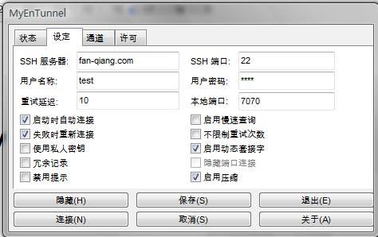
填写好后，点击上图左下角的连接按钮，在弹出的对话框中选YES。连接成功后任务栏的小锁变绿，如图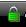。这样MyEnTunnel就配置好了。
从http://www.mozillaonline.com/上下载最新版FireFox，安装后，再下载FoxyProxy，把FoxyProxy拖拽到打开的FireFox里面安装。
在FireFox下面的状态栏里找到FoxyProxy的狐狸头，右键选择“选项”→“新建代理服务器”如图：
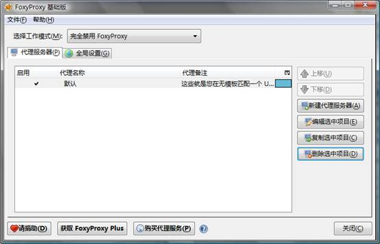
按照下图填写和勾选，注意√上SOCKS代理？：
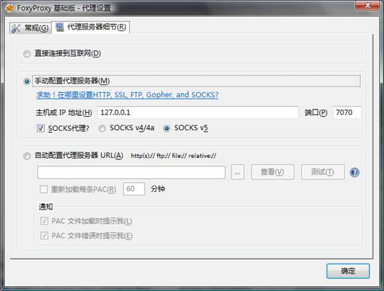
点击右下角确定后，右键点浏览器状态栏中的foxyproxy，选择刚建的代理
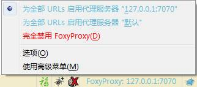
这样就可以了，试试访问twitter.com吧！
如果foxyproxy怎么配置都有问题，可以试试 autoproxy 这个插件，如下图设置
设置代理
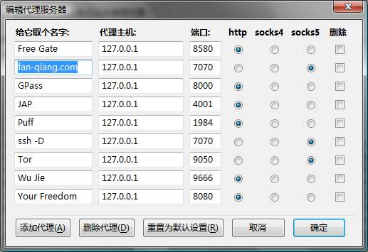
设为全局：
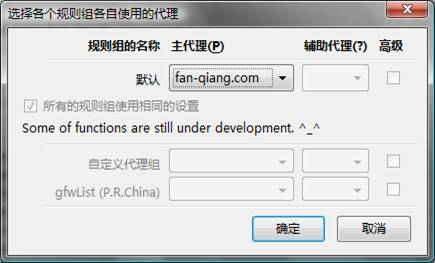
启动全局模式，就可以了。
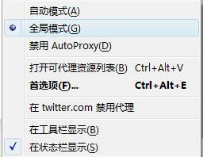
如果您主要想翻出去看YOUTUBE等对网速要求比较高的网站，建议把MyEntunnel换成Tunnelier。速度能快许多。下面是Tunnelier的配置方法。
下载Tunnelier，运行，如下图填写
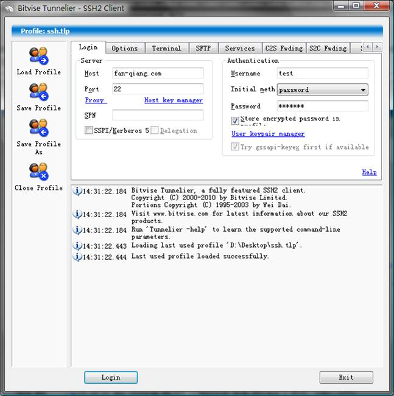
第二个Options右边的√都去掉
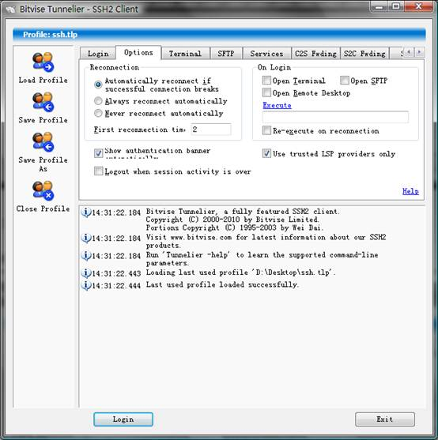
本地端口写7070
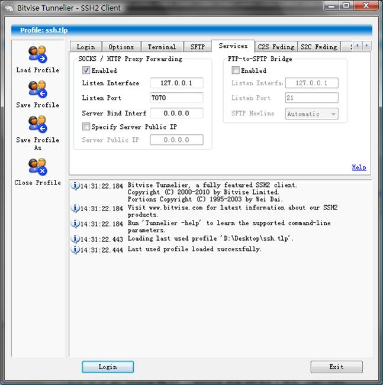
点下面的Login就可以了。
如果不想用Firefox想用Chrome翻墙的话，下载Proxy Switchy这款插件，如下图填写就可以了。
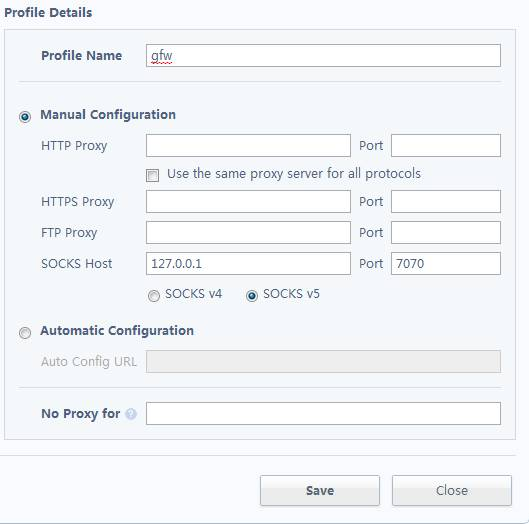
注意一点，如果switchy proxy选择了所有都走这个代理的话，系统的代理也会跟着改变，这样IE也可以翻墙了。
Copyright：fan-qiang.com